Wisata Majapahit
Kerajaan Majapahit adalah kerajaan
bercorak Hindu-Buddha yang dianggap sebagai salah satu negara
terbesar dalam sejarah Indonesia. Hal ini dikarenakan wilayah
kekuasaannya yang sangat luas, bahkan hampir mencakup seluruh
nusantara. Kerajaan Majapahit berkuasa sekitar dua abad, lebih
tepatnya antara 1293-1500 M. Pendirinya adalah Raden Wijaya, menantu
dari penguasa terakhir Kerajaan Singasari yang bernama Raja
Kertanegara. Puncak kejayaan Kerajaan Majapahit berlangsung pada
masa pemerintahan Hayam Wuruk (1350-1389 M) dengan Gajah Mada
sebagai patihnya.
Kerajan Majapahit meninggalkan beberapa peninggalan, di antaranya
yang harus kamu kunjungi ketika kamu berkunjung ke Mojokerto adalah
sebagai berikut:
1. Candi Tikus
Candi Tikus adalah sebuah peninggalan dari
kerajaan yang bercorak Hindu yang terletak di Kompleks Trowulan,
tepatnya di Dukuh Dinuk, Desa Temon, Kecamatan Trowulan, Kabupaten
Mojokerto, Jawa Timur. Nama 'Candi Tikus' hanya merupakan sebutan
yang digunakan masyarakat setempat. Konon, pada saat ditemukan,
tempat Candi tersebut berada merupakan sarang tikus.
2. Candi Bajang Ratu
Gapura Bajang Ratu atau juga dikenal
dengan nama Candi Bajang Ratu adalah sebuah gapura / candi
peninggalan Majapahit yang berada di Desa Temon, Kecamatan Trowulan,
Kabupaten Mojokerto, Jawa Timur, Indonesia. Bangunan ini
diperkirakan dibangun pada abad ke-14 dan adalah salah satu gapura
besar pada zaman keemasan Majapahit. Menurut catatan Badan
Pelestarian Peninggalan Purbakala Mojokerto, candi / gapura ini
berfungsi sebagai pintu masuk bagi bangunan suci untuk memperingati
wafatnya Raja Jayanegara yang dalam Negarakertagama disebut "kembali
ke dunia Wisnu" tahun 1250 Saka (sekitar tahun 1328 M). Namun
sebenarnya sebelum wafatnya Jayanegara candi ini dipergunakan
sebagai pintu belakang kerajaan.
3. Candi Wringin Lawang
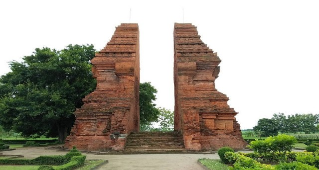
Gapura Wringin Lawang adalah sebuah gapura
peninggalan kerajaan Majapahit abad ke-14 yang berada di Jatipasar,
Kecamatan Trowulan, Kabupaten Mojokerto, Jawa Timur, Indonesia.
Bangunan ini terletak tak jauh ke selatan dari jalan utama di
Jatipasar.
4. Candi Brahu
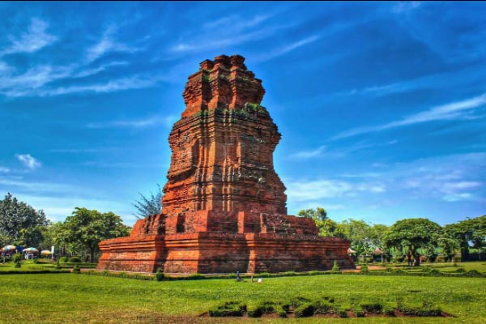
Candi Brahu terletak di Dukuh Jambu Mente,
Desa Bejijong, Kecamatan Trowulan, Kabupaten Mojokerto. Tepat di
depan kantor Suaka Peninggalan Sejarah dan Purbakala Jawa Timur yang
terletak di jalan raya Mojokerto-Jombang terdapat jalan masuk ke
arah utara yang agak sempit namun telah diaspal. Candi Brahu
terletak di sisi kanan jalan kecil tersebut, sekitar 1,8 km dari
jalan raya.
5. Kolam Segaran
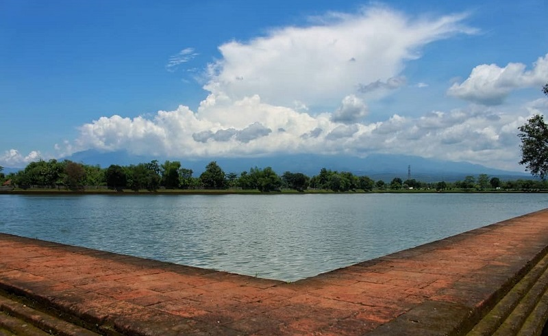
Kolam Segaran merupakan satu-satunya kolam
kuno terbesar yang pernah ditemukan di Indonesia. Luasnya kurang
lebih 6,5 hektare dengan bentuk membujur ke arah utara-selatan
sepanjang 375 meter dengan lebar 175 meter. Sekeliling tepi kolam
dilapisi dinding setebal 1,60 meter dengan kedalaman 2,88 meter.
Kolam Renang
Terletak di kaki gunung, Mojokerto
memiliki wisata air yang bisa dikunjungi untuk mengisi libur akhir
pekan.
1. Pemandian Air Panas Pacet
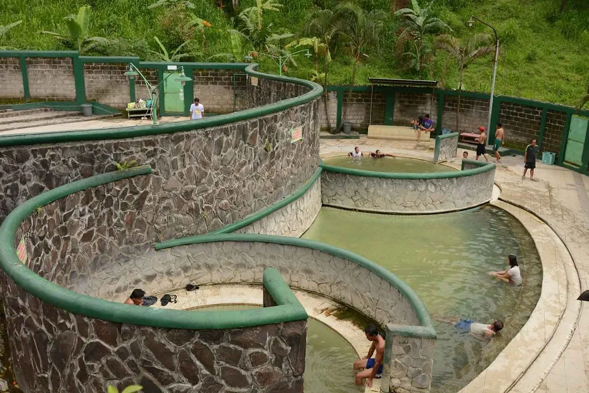
Pemandian Air Panas terletak di Desa
Padusan, Pacet. Berbeda dengan lokasi pemandian air panas lainnya,
air panas di obyek wisata ini berasal dari sumber mata air alami
pegunungan Welirang. Obyek wisata ini selalu ramai pada saat akhir
pekan, baik wisatawan lokal Mojokerto maupun luar Mojokerto seperti
Surabaya, Gresik, Sidoarjo, dan lain sebagainya.
Kandungan air panas yang alami juga
mengandung belerang yang diyakini bisa menghilangkan capek setelah
beraktivitas selama sepekan. Oleh karena itu, Pemandian Air Panas
ini menjadi tempat favorit bagi wisatawan.
2. Ubalan Waterpark
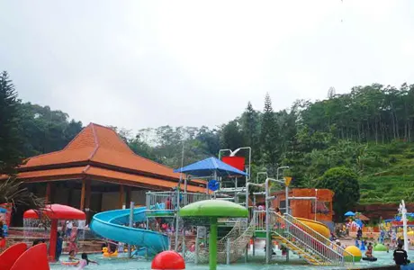
Terletak di kaki Gunung Welirang, kawasan
Pacet terdapat banyak wisata air, seperti Ubalan Waterpark. Tempat
wisata ini berjarak sekitar 30 km dari pusat kota Mojokerto ke arah
selatan. Taman air ini sebenarnya adalah tempat pemandian air panas
yang air kolamnya bersumber dari mata air pegunungan.
Ubalan Waterpark Pacet menyediakan
beberapa kolam dengan kedalaman 50 cm, 125 cm, dan yang paling dalam
400 cm, biasa digunakan oleh profesional. Terdapat arena bermain
seperti ember tumpah, waterboom mini, dan masih banyak lagi hiburan
seru lainnya.
3. Pacet Mini Park
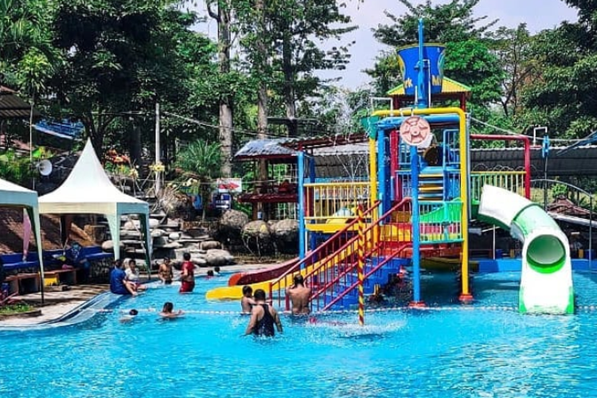
Pacet Mini Park merupakan taman rekreasi
yang menyediakan beragam permainan dan hiburan seru untuk anak-anak.
Mulai dari taman kelinci, istana balon, kereta mini, flying fox,
play ground, soft game, hard game, bumper boat, bumper car, hingga
ATV. Namun, tak hanya itu saja, di sini juga menyediakan waterpark.
Wisata air yang ada di Pacet Mini Park terbilang cukup lengkap.
Terdapat tiga area yang berbeda, yaitu waterpark, water slide, dan
kolam terapi ikan. Jadi ketika berenang di sini, kamu bisa mengajak
anak dan ikut merefleksikan tubuh dengan cara terapi ikan.
4. Wisata Air Balekambang
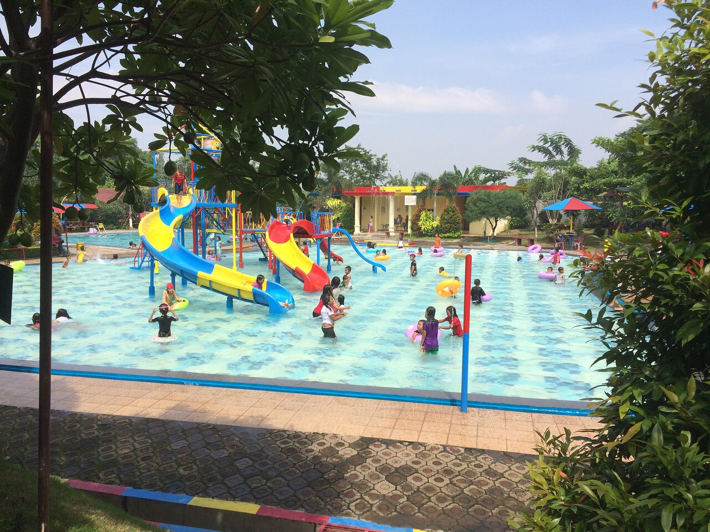
Wisata Air Balekambang memiliki beberapa
area berenang. Ada kolam untuk orang dewasa, kolam anak, serta water
slide yang biasa digunakan untuk anak-anak bermain. Selain itu, di
sini menyediakan gazebo untuk beristirahat, wahana kereta mini,
serta ATV.
5. Parimas Water Park
Parimas Waterpark Pacet ini berada tepat
di jalan setelah gapura pintu masuk kawasan wisata Pacet yaitu Jl.
Mojosari – Pacet No. Km 10, Dusun Wonosari, Desa Warugunung, Pacet,
Mojokerto, Jawa Timur 61374. Jadi jika Anda dari arah Mojosari akan
naik ke Pacet selepas pertigaan pom bensin desa Pandan Anda tinggal
naik sedikit sekitar 100 meter di kiri jalan Anda sudah sampai di
lokasi Parimas Pacet.
Camping Ground
Camp ground merupakan istilah umum di
dunia pecinta alam untuk menyebut bumi perkemahan. Tempat ini
merupakan lokasi untuk mendirikan tenda dan melakukan kegiatan
berkemah, berupa ruang luas di luar ruangan.
1. Bukit Krapyak
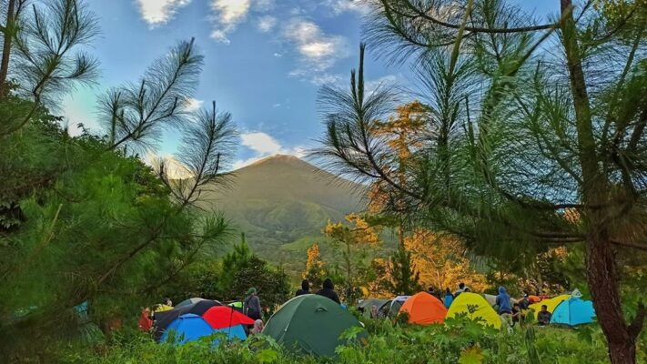
Bukit Krapyak, lokasi wisata dengan
suguhan suasana pegunungan ini bisa menjadi spot camping seru. Dari
bukit ini, wisatawan akan disambut hawa dingin sekaligus pemandangan
alam yang masih asri.
2. COD Tegal Klopo
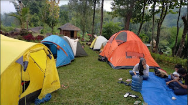
COD Tegal Klopo Pacet adalah sebuah tempat
camping terbaru yang paling hits di kawasan wisata Pacet. Berada di
atas ketinggian lebih kurang 850 Mdpl, tempat ini menawarkan suasana
camping dengan view pemandangan Gunung Welirang, Gunung
Penanggungan, serta pemandangan gemerlap lampu kota pada malam hari.
COD artinya adalah Camping , Outbound & Dolanan, sedangkan Tegal Klopo diambil dari nama julukan oleh penduduk
sekitar yang konon katanya tempat ini adalah sebuah tegalan atau
sawah di tebing yang ditumbuhi banyak pohon kelapa, makanya warga
sekitar memberi nama “Tegal Klopo”.
3. Alas Pelangi
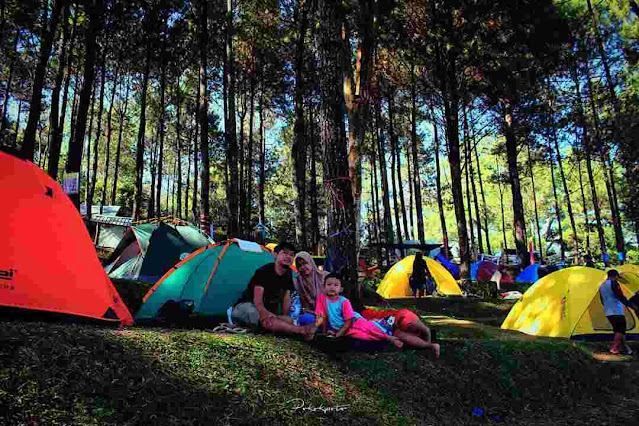
Wisata Alas Pelangi Trawas lokasinya cukup
dekat dengan Wisata Paralayang Trawas, Wisata Air Terjun Dlundung,
dan Coban Canggu. Namun, kebanyakan wisatawan memilih Wisata Alas
Pelangi Trawas jika kedua tempat wisata ini telah dipadati
pengunjung. Apalagi bagi Anda yang sering libur dengan membawa
anggota keluarga lengkap, rasanya akan jenuh bila harus berwisata di
tempat yang ramai pengunjung. Untuk itu, Wisata Alas Pelangi Trawas
kerap dijadikan alternatifnya.
4. Obis Camp
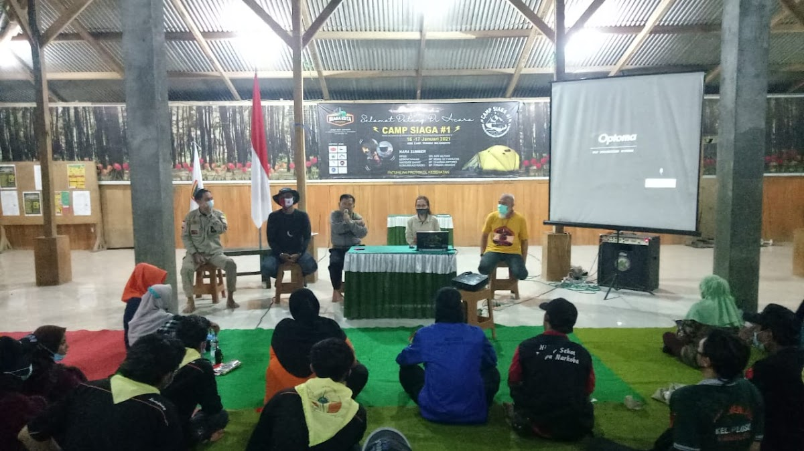
Obis Camp Trawas ini memanglah sebuah
tempat yang rindang dengan banyaknya pepohonan pinus. Dengan konsep
sederhana, Obis Camp juga menyediakan penginapan berupa
bangunan/barak untuk kapasitas ratusan orang. Selain itu terdapat
aula berkapasitas 200 orang, 15 MCK, dapur umum, flying fox.
Tersedianya lahan untuk kegiatan outdoor yang luas akan menjadikan
kegiatan lebih terkonsep.
5. Alas Pacet
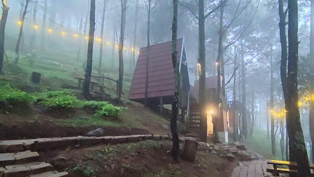
Alas Pacet juga menawarkan panorama alam
yang memanjakan mata nih traveler. Sisi selatannya mempunyai latar
belakang Gunung Welirang, sedangkan view Gunung Penanggungan berada
di sisi utara.